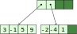

Inmutabilidad y tipos algebraicos de datos en Java
montenegro@fdi.ucm.es
Máster en Ingeniería Informática
Facultad de Informática
Universidad Complutense de Madrid
- Inmutabilidad mediante final
- Tipos producto mediante record
- Tipos unión
- Gestión de errores mediante Optional<T>
- Estructuras de datos persistentes
Inmutabilidad mediante final
Palabra clave final
Una manera de forzar la inmutabilidad en Java es declarando las variables como
final.Las variables
final, una vez inicializadas, no pueden ser modificadas.
Las variables
finalpueden inicializarse después de su definición.
Atributos final en clases
- Es posible declarar atributos
finaldentro de las clases. Pueden ser ser inicializados en la declaración, o en el constructor.
Inconvenientes de final
El modificador
finalprohibe cambiar el valor de la variable, pero no prohibe mutar el objeto apuntado por esa variable.
Para poder disponer de inmutabilidad completa, hemos de asegurar que los tipos de los atributos y las variables sean inmutables.
En particular:
Los objetos
Stringson inmutables.Las listas devueltas por
List.of(...)o porArrays.asList(...)son inmutables.Los diccionarios devueltos por
Map.of(...)son inmutables.
Mediante librerías externas, podemos tener colecciones de datos inmutables.
Tipos producto mediante record
Tipos producto
En programación orientada a objetos, es posible representar un tipo producto mediante una clase.
Tradicionalmente, en POO las clases no solo sirven para almacenar datos, sino también para implementar operaciones que mutan esos datos.
Sin embargo, en programación funcional, los tipos de datos se definen de manera separada de las operaciones.
Tipos producto mediante clases
public class Fecha {
// Atributos
private final int dia;
private final int mes;
private final int anyo;
// Constructor
public Fecha(int dia, int mes, int anyo) { /* ... */ }
// Métodos de acceso
public int getDia() { /* ... */ }
public int getMes() { /* ... */ }
public int getAnyo() { /* ... */ }
}¡Cuánto código para un tipo tan simple!
Tipos producto mediante records
Define una clase
Fechacon tres atributos.- Los atributos son
final, aunque no se indique explícitamente.
- Los atributos son
Dentro de la declaración de un
record(entre{y}):Se pueden definir métodos.
No se pueden definir nuevos atributos.
Un
recordpuede implementar interfaces, pero no extender clases.
En un
recordse generan automáticamente:- Un constructor
Fecha(int dia, int mes, int anyo) - Métodos de acceso:
dia(),mes(),anyo() - Método
toString() - Método
equals() - Método
hashCode()
- Un constructor
Ejemplo de uso
var f1 = new Fecha(15, 3, 1979);
var f2 = new Fecha(15, 3, 1979);
System.out.println(f1); Uso de `toString()`
// Imprime: Fecha[dia=15, mes=3, anyo=1979]
if (f1.equals(f2)) { Uso de `equals()`
System.out.println("Las fechas son iguales");
}
var dias = Stream.of(f1, f2)
.map(Fecha::dia) Uso de método `dia()`
.toList();
System.out.println(dias); // Imprime: [15, 15]- Los métodos generados automáticamente se pueden sobreescribir:
- Se puede modificar el constructor canónico, o añadir constructores extra:
public record Fecha(int dia, int mes, int anyo) {
// Si modificamos el constructor canónico, no hace falta definir los
// parámetros. Tampoco hace falta asignar los atributos `dia`, `mes` y
// `anyo`, a menos que queramos modificarlos.
public Fecha {
if (mes < 1 || mes > 12) {
throw new RuntimeException("Mes no válido: " + mes);
}
}
// Constructor alternativo: delega en el constructor canónico
public Fecha(int anyo) {
this(0, 0, anyo);
}
}Operaciones modificadoras
Como los atributos de un record son
final, no se generan setters.No obstante, podemos añadir métodos
withpara generar copias de objetos, modificando algún atributo:
Biblioteca Immutables
Biblioteca para la creación de clases que representan objetos inmutables.
Utiliza los procesadores de anotaciones de Java para generar automáticamente código.
Ejemplo de definición
Definimos tipo unión
Fechacon tres atributos:La anotación
@Value.Immutablees procesada en tiempo de compilación para generar clases y métodos auxiliares.
Ejemplos de uso
Por defecto, la creación de objetos con anotados con
@Value.Immutableutiliza el patrón builder:También se pueden crear copias modificadas de objetos a partir de ya existentes:
Es posible configurar la interfaz de las clases generadas automáticamente:
Tipos unión
Tipos unión
En lenguajes orientados a objetos, se puede modelizar un tipo unión utilizando herencia:
- Una interfaz abstracta para el tipo unión.
- Clases concretas para cada alternativa.

Enfoque tradicional (POO)
- En POO, la manera idiomática de añadir operaciones a un tipo unión es incorporarlas como métodos abstractos:

Interfaz Figura
Tipo Circulo
Ventajas e inconvenientes del enfoque POO
- Las definiciones de una misma función están dispersas entre varias clases.
- Si la jerarquía de clases está en una biblioteca aparte, no es posible añadir nuevas operaciones al tipo unión.
- Extensibilidad vertical: es fácil añadir nuevas alternativas al tipo unión.
Enfoque funcional
Consiste en implementar las operaciones de un tipo unión fuera de la jerarquía, y distinguir casos según la alternativa del tipo unión.
Es decir, hacer algo similar a lo que hacíamos en Elixir:
La implementación en Java queda del siguiente modo:
- Es necesario hacer un casting en cada una de las alternativas.
-
Cadena
if–else if–else if.
instanceof con ajuste de patrones (Java 18)
Es posible realizar la comprobación de tipos y declarar una variable del tipo correspondiente en un único paso:
- Los ámbitos de las variables
rycson los de las ramas delifcorrespondientes.
Expresiones switch (Java 17)
- La construcción
switchha existido en Java desde los inicios del lenguaje, pero no como expresión, sino como sentencia:
Es posible utilizar
switchcomo expresión:Tras cada
casese coloca una flecha (->) en lugar de dos puntos (:).Al lado derecho de cada
->se coloca una expresión.Es necesario un caso
default(salvo excepciones).
- Es posible agrupar varios casos en un mismo
case:
enum Mes { ENERO, FEBRERO, MARZO, ABRIL, MAYO, JUNIO, JULIO,
AGOSTO, SEPTIEMBRE, OCTUBRE, NOVIEMBRE, DICIEMBRE };
static int numDias(Mes m, boolean esBisiesto) {
return switch(m) {
case Mes.FEBRERO -> esBisiesto ? 29 : 28;
case Mes.ABRIL, Mes.JUNIO, Mes.SEPTIEMBRE, Mes.NOVIEMBRE -> 30;
default -> 31;
};
} - Cuando hacemos distinción exhaustiva sobre los valores de un tipo
enumno es necesaria una ramadefault.
- Dentro de cada rama de una expresión
switches posible escribir sentencias, siempre que contengan unyieldque indique la expresión a devolver en esa rama delswitch:
switch como
alternativa a instanceof
Las expresiones
switchpermiten distinguir casos según el tipo del discriminante:
¿Por qué el default?
En una expresión
switch, la distinción de casos ha de ser exhaustiva.La interfaz
Figurasolamente tiene tres clases:Rectangulo,CirculoySegmento.- …pero nada impide que se
declaren nuevas subclases de
Figura, incluso en otros módulos.
- …pero nada impide que se
declaren nuevas subclases de
¿Cómo podemos prohibir nuevas subclases en Figura, aparte de las que hemos definido nosotros?
Clases selladas (sealed)
Una clase sellada (sealed) no puede ser extendida, salvo por algunas clases autorizadas.
En la definición de la clase sellada se indican aquellas clases que están autorizadas a extenderla.
El mismo concepto se aplica a las interfaces.
Como el tipo
Figuraestá sellado y solamente puede tener tres alternativas, ya no es necesario el casodefaulten elswitch, porque la distinción es exhaustiva.
Ajuste de patrones mediante switch
Si las clases sobre las que se hace ajuste son
records, es posible colocar los atributos de las clases en elcase:
También se puede utilizar inferencia de tipos (
var) en los patrones:
Se permiten guardas (mediante
when) en los patrones:
Ventajas e inconvenientes del enfoque funcional
- Todos los casos están en una misma función.
- Extensibilidad horizontal: es posible definir funciones de manera externa a la jerarquía de clases.
- No hay extensibilidad vertical. El tipo unión está definido a priori y no es posible añadir nuevas alternativas.
Comparativa Java vs Elixir
| Java | Elixir | |
|---|---|---|
| Extensibilidad horizontal | Clases sealed + switch |
Ajuste de patrones |
| Extensibilidad vertical | Herencia + métodos abstractos |
Protocolos |
Gestión de errores mediante Optional<T>
Inconvenientes del uso de null
La forma tradicional de denotar ausencia de valores en Java es el uso de
null.- Por ejemplo, el método
get()de los diccionarios devuelvenullsi no hay ningún valor asociado a la clave indicada.
- Por ejemplo, el método
El uso de
nullpara denotar ausencia de valores es problemático [+]
La clase Optional<T>
Definida en paquete java.util
Define el tipo unión option explicado anteriormente [+].
Las instancias de
Optional<T>pueden contener un objeto de tipoTo no contener ninguno.El método
isPresent()determina si una instancia deOptional<T>contiene un objeto o no.El método
get()permite obtener el objeto contenido dentro delOptional<T>, si existe.- Lanza excepción si el
Optional<T>no contiene objeto.
- Lanza excepción si el
Si utilizamos
Optional<T>, el sistema de tipos nos avisa cuando estamos accediendo a un valor potencialmente nulo.Por ejemplo, supongamos que el método
get()de la claseMap<K, V>estuviera definido del siguiente modo:El siguiente fragmento de código no compilaría:
En su lugar, deberíamos comprobar si el objeto está presente y determinar qué hacer cuando no lo esté.
Construir un objeto Optional<T>
Optional.of(T valor)-
Construye un
Optional<T>con el valor indicado, siempre que sea distinto denull. Optional.ofNullable(T valor)-
Construye un
Optional<T>con el valor indicado. Construye unOptional<T>vacío si el valor pasado esnull. Optional.empty()-
Construye un
Optional<T>vacío.
Ejemplo
Volviendo a la interfaz original de
Map(aquella en la queget()devuelvenullcuando la clave a buscar no existe):
Métodos map, flatMap y
orElse
class Optional<T> {
// ...
public Optional<U> map(Function<T, U> f);
public Optional<U> flatMap(Function<T, Optional<U>> f);
public T orElse(T other);
}- Permiten ahorrarnos las distinciones de casos mediante
isPresent().
Ejemplo
Partimos del siguiente código:
Método orElse
Obtiene un objeto de tipo
Ta partir de unOptional<T>.- Si el
Optional<T>está vacío, devuelve el valorother. - Si no, devuelve el objeto contenido dentro del
Optional<T>.
- Si el
Sirve para abreviar expresiones como la siguiente:
Método map
Transforma un
Optional<T>en unOptional<U>:Si el
Optional<T>sobre el que se aplica está vacío, devuelve unOptional<U>vacío.Si contiene un valor, devuelve un
Optional<U>cuyo contenido es el resultado de aplicarfsobre dicho valor.Si
fdevuelvenull, devuelve unOptional<U>vacío.
Sirve para abreviar expresiones como la siguiente:
En lugar de:
int longitudPrimero(Map<Integer, TreeSet<String>> dicc) {
var optSet = Optional.ofNullable(dicc.get(3));
if (optSet.isPresent()) {
var optStr = Optional.ofNullable(optSet.get().pollFirst());
return optStr.isPresent() ? optStr.get().length() : 0;
} else { /* ... */ }
}Podemos escribir:
- La llamada a
pollFirstpuede simplificarse mediantemap:
- También podemos simplificar la distinción de casos inicial sobre
optSet:
Estructuras de datos persistentes
Colecciones en la biblioteca estándar de Java
Las colecciones de la biblioteca estándar de Java (
List,Map,Set, etc.) definen métodos cuya finalidad es mutar la colección sobre la que se aplican. Por ejemplo:void List<T>.add(T elem)void Map<K, V> put(K key, V value)
Algunas de las implementaciones de esta interfaz se consideran inmutables, en el sentido en el que prohiben las llamadas a las operaciones mutadoras.
Estructuras de datos persistentes
Una estructura de datos persistente es inmutable, pero no prohíbe las llamadas a operaciones mutadoras.
Una llamada a una operación mutadora devuelve una copia de la estructura original, de modo que es posible acceder tanto a la estructura original como a la resultante de la operación.
La copia realizada puede tener compartición de elementos con la estructura original, por motivos de eficiencia.
Implementaciones de estructuras persistentes
Listas enlazadas
Bitmapped Vector Tries

Árboles binarios de búsqueda equilibrados
Listas enlazadas persistentes
En la mayoría de lenguajes funcionales, las listas son un tipo unión que resulta de aplicar reiteradamente un constructor de listas.
Una lista puede ser:
Vacía
[]en Haskell y[]en ElixirNo vacía, con cabeza
xy colaxs
(x:xs)en Haskell y[x|xs]en Elixir
A este constructor de listas se le denomina cons.
- Podemos implementar listas enlazadas persistentes en Java como un tipo unión:
public sealed interface IList<T> permits Empty, Cons { }
record Empty<T>() implements IList<T> { }
record Cons<T>(T head, IList<T> tail) implements IList<T> { }- Implementamos las funciones sobre listas como métodos
defaultdentro de la interfazIList<T>.
Longitud de una lista
default int length() {
return switch (this) {
case Empty<T> _ -> 0;
case Cons<T> v -> 1 + v.tail().length();
};
}Concatenar dos listas
La concatenación de listas genera una copia de la lista
this:
La búsqueda del elemento
n-ésimo de una lista requiere recorrer todos los anteriores:
Función map
default <U> IList<U> map(Function<T, U> f) {
return switch (this) {
case Empty<T> _ -> new Empty<>();
case Cons<T> v -> new Cons<>(f.apply(v.head()), v.tail().map(f));
};
}Función forEach
Función reduce
default <R> R reduce(R ini, BiFunction<T, R, R> f) {
return switch (this) {
case Empty<T> _ -> ini;
case Cons<T> v -> v.tail().reduce(f.apply(v.head(), ini), f);
};
}Función reduceRight
- Implementación de
appendylengthutilizando las funcionesreduce:
Coste de las operaciones
| Coste | |
|---|---|
Cons(x, xs) |
O(1) |
xs.head() |
O(1) |
xs.last() |
O(xs) |
xs.length() |
O(xs) |
xs.append(ys) |
O(xs) |
xs.at(i) |
O(i) |
Bitmapped Vector Tries
Es una estructura de vectores enlazados jerárquicamente.
Los vectores tienen una longitud fija K tal que K = 2n para algún n.
Normalmente se utiliza K = 32.
En estas diapositivas, utilizamos K = 4 por motivos de presentación.
- Inicialmente, tenemos un vector de tamaño K, que llenamos de izquierda a derecha:
- Cuando queremos añadir un elemento al final y el vector está lleno:
- Añadimos el nuevo elemento en un vector aparte.
- Creamos un vector «padre» que apunte a ambos:
Si llenamos el segundo vector, añadimos un tercero, y así sucesivamente.
Esto nos permite tener hasta 16 elementos.
- Al insertar un elemento más, tenemos que añadir un nuevo nivel:
- Con tres niveles, pueden almacenarse ≤ 64 elementos.
Para acceder al elemento
i-ésimo, obtenemos una representación de bits del índiceiy formamos paquetes de log K bits.Por ejemplo: posición
i = 17.La secuencia de paquetes nos indica el camino que debemos seguir desde el vector «raíz» hasta el elemento correspondiente.
Coste de las operaciones
n = tamaño de la lista
| Coste | |
|---|---|
| Añadir por el final | O(logK n) |
| Añadir por el principio | O(n) |
Modificar el valor i-ésimo |
O(logK n) |
Acceder a elemento i-ésimo |
O(logK n) |
Con 1 billón de elementos (casi 4 TB de memoria) y K = 32, el árbol tendría profundidad 8.
Los costes O(logK n) son O(1) en la práctica
Árboles binarios de búsqueda
Son útiles para implementar conjuntos y diccionarios.
Pueden implementarse mediante tipos unión:
public sealed interface ISet permits Empty, Node { /*...*/ }
record Empty() implements ISet { }
record Node(int elem, ISet left, ISet right) implements ISet { }- Por simplicidad, consideramos árboles de valores enteros.
- Si se quisieran árboles de un tipo genérico
T, ese tipo tendría que implementar la interfazComparable<T>.
- Si se quisieran árboles de un tipo genérico
Búsqueda de un elemento en un conjunto
- Si el conjunto no es vacío, comparamos el elemento a buscar con la
raíz.
- Si el elemento a buscar es menor que la raíz, buscamos en el hijo izquierdo.
- Si es mayor que la raíz, buscamos en el hijo derecho.
Inserción de un elemento en un conjunto
- Mecanismo similar a la búsqueda, pero cuando llegamos a un árbol vacío, colocamos un nodo con el elemento a insertar.
default ISet add(int x) {
return switch (this) {
case Empty _ -> new Node(x, new Empty(), new Empty()); Nuevo nodo
case Node v when v.elem() == x -> this;
case Node v when x < v.elem() ->
new Node(v.elem(), v.left().add(x), v.right());
case Node v ->
new Node(v.elem(), v.left(), v.right().add(x));
};
}- En una implementación imperativa tradicional, los nodos del árbol se modificarían para acomodar el nuevo elemento.
- Por ejemplo, si insertamos el
7en el siguiente árbol:
- En la implementación funcional, se crea un nuevo árbol que comparte algunos hijos con el árbol original.
- Solamente se reconstruyen los nodos que están entre la raíz y el nodo recién insertado.
- El resto de nodos se reutilizan en el resultado.
- Coste en memoria: O(log n), con n el tamaño del árbol si está equilibrado.
Eliminación de un elemento de un conjunto
Necesitamos un método auxiliar
removeLowest, que devuelve el resultado de eliminar el nodo con menor valor en un árbol binario de búsqueda.Devuelve:
- El valor del nodo eliminado.
- El árbol resultante tras eliminar ese nodo.
Definimos el valor de retorno de
removeLowestmediante un tiporecord:
private RemoveLowestResult removeLowest() {
return switch (this) {
case Empty _ ->
throw new RuntimeException("RemoveLowest en árbol vacío");
case Node(var elem, Empty(), var r) ->
new RemoveLowestResult(elem, r);
case Node(var elem, var l, var r) -> {
var leftResult = l.removeLowest();
yield new RemoveLowestResult(leftResult.lowest(),
new Node(elem, leftResult.result(), r));
}
};
}- Para borrar un elemento de un conjunto, lo buscamos en el árbol binario de búsqueda.
- Cuando lo encontramos, construimos un árbol sin ese elemento.
- Si el nodo correspondiente tenía un hijo vacío, se coloca el otro en su lugar.
- Si el nodo correspondiente no tenía hijos vacíos, se construye un nodo con el elemento menor del hijo derecho, que será eliminado de este último.
default ISet remove(int x) {
return switch (this) {
// Si el elemento a borrar no se encuentra en el árbol, devolvemos el
// mismo árbol
case Empty _ -> this;
// Si el elemento a borrar se encuentra en el árbol, y su hijo derecho
// está vacío, devolvemos el hijo izquierdo.
case Node v when v.elem() == x && v.right().isEmpty() -> v.left();
// Caso análogo al anterior.
case Node v when v.elem() == x && v.left().isEmpty() -> v.right();
// Si el elemento a borrar tiene dos hijos no vacíos, eliminamos el
// menor valor del hijo derecho, que será la nueva raíz.
case Node v when v.elem() == x -> {
var rightResult = v.right().removeLowest();
yield new Node(rightResult.lowest(), v.left(), rightResult.result());
}
// ...continúa...Árboles equilibrados
La implementación mostrada anteriormente puede dar lugar a árboles desequilibrados.
- En este caso, el coste de una operación podría ser lineal con respecto al número de elementos del conjunto.
Existen implementaciones que reequilibran el árbol cada vez que se realiza una operación de inserción o borrado.
Coste de las operaciones
Coste en espacio y tiempo, suponiendo árboles equilibrados
n es el número de elementos del conjunto.
| Coste tiempo | Coste espacio | |
|---|---|---|
| Búsqueda | O(log n) | O(1) |
| Inserción | O(log n) | O(log n) |
| Borrado | O(log n) | O(log n) |
java-immutable-collections
http://brianburton.github.io/java-immutable-collections/
Es una biblioteca de Java que proporciona implementaciones de estructuras persistentes.
IDeque: colas doblesIList: listasIMap: diccionariosISet: conjuntos
IDeque
- Implementa dobles colas utilizando árboles no equilibrados de aridad 32.
- Solamente inserciones/borrados al principio y al final.
- Las operaciones tienen coste O(log32 n), donde n es el tamaño de la cola doble.
IList
Listas implementadas mediante árboles binarios equilibrados.
Permiten inserciones/borrados al principio, al final y en mitad.
Coste operaciones: O(log n), con n el tamaño de la lista.
ISet
Conjuntos implementados mediante:
Hashmapped array tries, si se crean mediante
ISets.hashed()Coste de las operaciones: O(log32 n), donde n es el tamaño del conjunto.
Árboles binarios de búsqueda equilibrados, si se crean mediante
ISets.sorted()Coste de las operaciones: O(log n), donde n es el tamaño del conjunto.
IMap
- Similar a
ISet, pero para almacenar diccionarios en lugar de conjuntos.